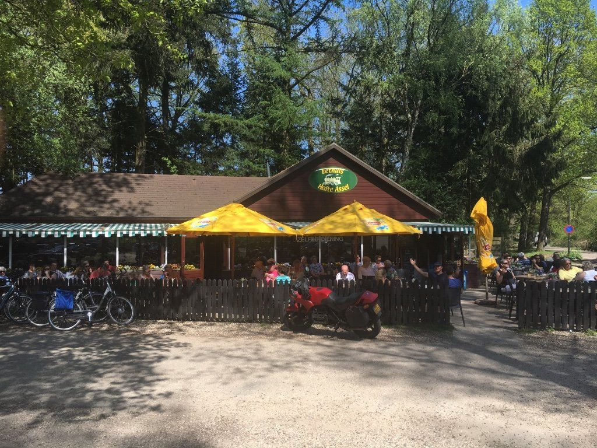
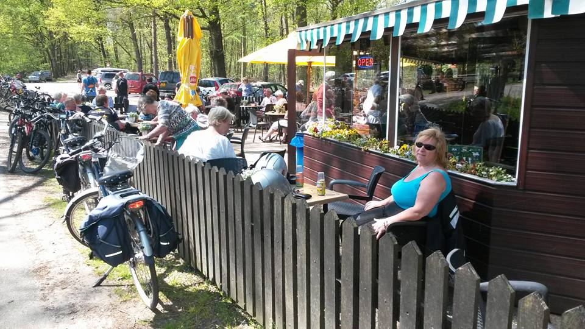
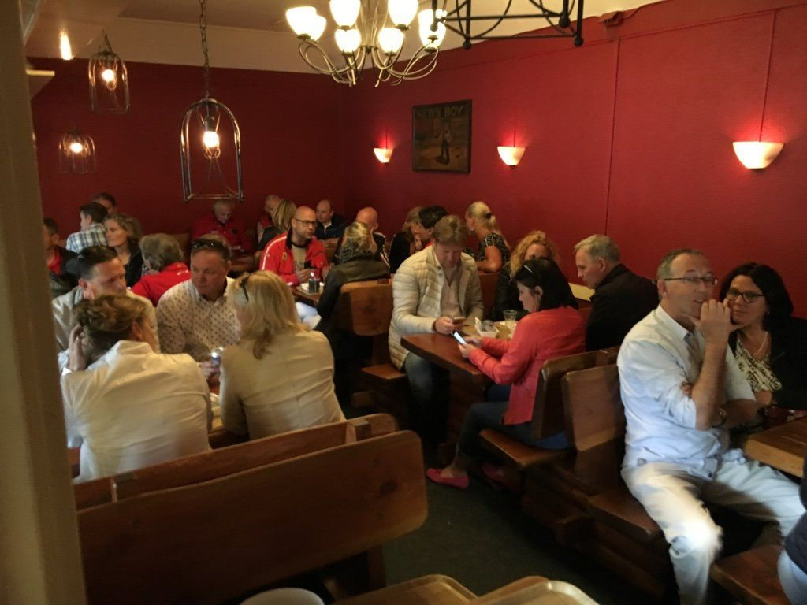
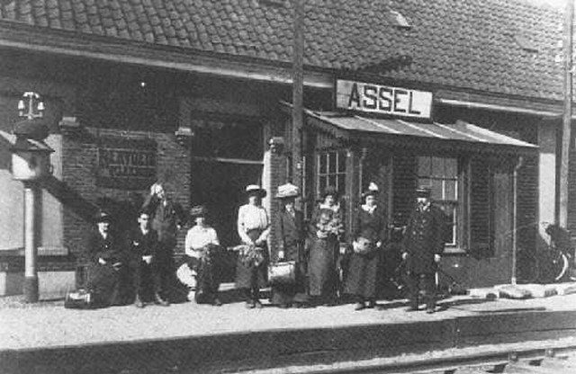
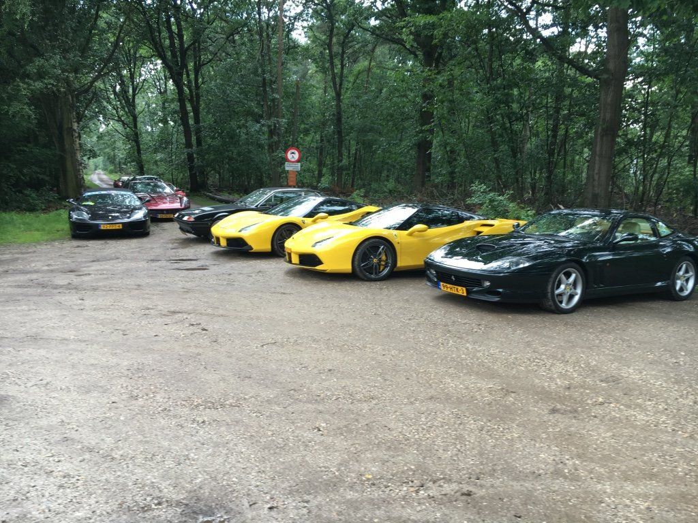
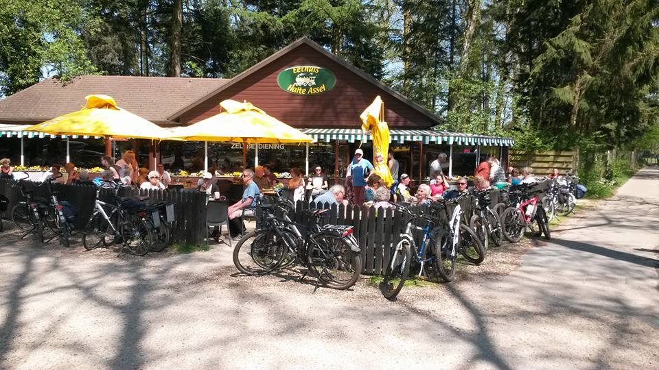
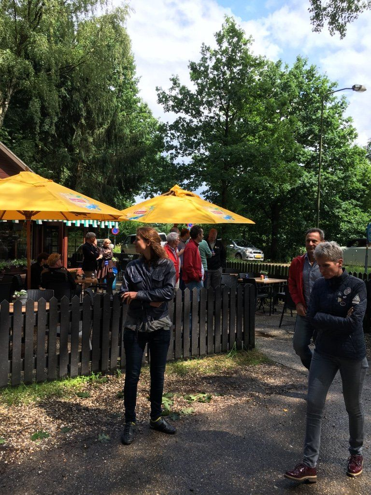
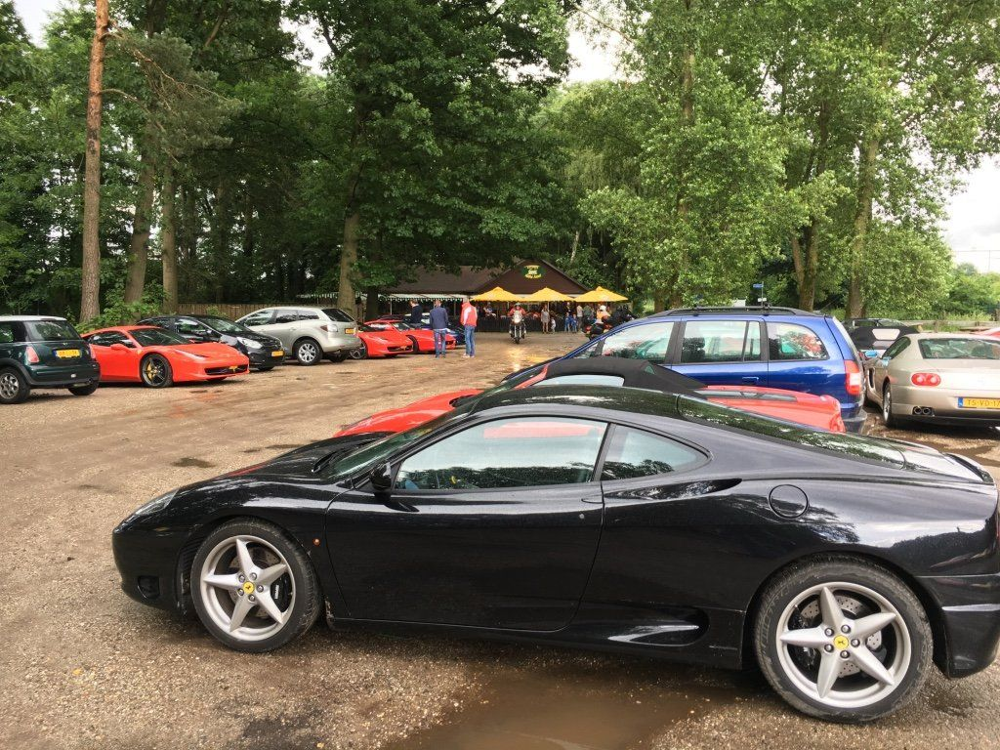

Halte Assel
EethuisHet trefpunt van de Veluwe
Temidden van de bossen en de heide. Maandag t/m zondag open van 10 tot 20 uur.
Een begrip, al generaties lang
Temidden van de bossen en de heide vindt u Halte Assel. Halte Assel is een begrip in de omgeving en bij vele generaties.
Wat begon als een klein gebouwtje waar eten kon worden besteld, is flink uitgebreid. Vele generaties hebben bij ons al op het terras genoten van een lekker hapje en drankje.



Station Assel, vroegerVan station tot eethuis
Halte Assel is van oorsprong een treinstation. Daar dankt ons eethuis nog altijd zijn naam aan: hier heeft altijd een station gestaan, in de plaats Assel.
- 15 mei 1876De halte wordt geopend, op de verbinding tussen station Amsterdam en station Zutphen. Koning Willem III gebruikt de halte vaak op weg naar zijn jachtslot en Kroondomein Het Loo, nu Paleis Het Loo. Later neemt Prins Hendrik dit over.
- 1918Er komt een kleine verbinding bij richting Radio Kootwijk, waar op dat moment het zendstation wordt aangelegd.
- Omstreeks 1930Tegenover het station vestigt zich een klein restaurantje, genaamd Halte Assel.
- 1935Het station tegenover het restaurant gaat dicht.
- 1943 – 1944Tijdens de Tweede Wereldoorlog is het station weer in dienst, van 1 maart 1943 tot 17 september 1944.
- 1972Het station wordt gesloopt; het eethuis blijft staan.
- NuHalte Assel is flink uitgebreid: plek voor 100 man binnen, een terras voor ruim 120 personen en een grote parkeerplaats.
Evenementen & groepen
Op zoek naar een locatie voor bijvoorbeeld een bedrijfsuitje, en eens iets anders dan de gemiddelde restaurantzaal? Kom dan eens bij Halte Assel.
- BedrijfsuitjeLekker buiten genieten op ons grote terras, met een hapje en een drankje.
- Auto- of motortoertochtWij zorgen voor een koffietafel voordat u vertrekt.
- LunchpakkettenVoor onderweg, om elders te nuttigen.
In overleg is er veel mogelijk. Belt of mailt u ons gerust om de mogelijkheden door te nemen.

Foto's



Openingstijden
Ma t/m zo
10 – 20 uur
Mocht het slecht weer zijn, dan kunnen onze openingstijden afwijken van de regel. Bel bij twijfel even.
Collega's gezocht
Ben jij enthousiast en lijkt het je leuk om in een gezellig team te werken? Misschien werk jij binnenkort in de horeca op de leukste plek van de Veluwe.